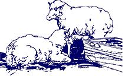

Robin Rye's article on sheep raising ("Life with the Woolies", MOTHER NO. 23) was basically good, but we feel that a few points should be emphasized. Our advice is based on personal experience with both commercial and purebred farm flocks in Minnesota, Wisconsin and California.
First, when you start your small homestead flock, we suggest that you buy a purebred (but not necessarily registered) meat-type ram: blackfaced Suffolk, Hampshire or Shropshire ... but choose wool-type ewes of whatever whitefaced breed is most suited to your climate. That way you'll get lots of wool for sale or hand spinning, yet meaty lambs for the table.
Although it may seem more natural to let your ram run with the flock all year-as Ms. Rye recommends-we don't encourage you to do so ... for two reasons. First, he can hurt both the ewes (in late pregnancy) and newborn lambs. We've seen males butting females and their young, and even trying to mount ewes directly after lambing. Why take the chance?
Perhaps the main reason for separating your ram from the rest of the flock, however, is so that you'll know when the offspring are due and be able to prepare for the event. (Some ewes can come in heat all year round, and it's the presence of the ram that triggers ovulation.) A ewe will give birth about 147 days after she's bred, so turn the male in with the flock about five months before you want your lambs born. The ideal time of year depends on your climate. In the Midwest we loosed our ram at Thanksgiving, but here in California we do so in mid-August.
Remember also that by controlling the time of breeding and lambing you can feed your sheep more economically. For the best use of fodder, flush the ewes (feed them extra grain or hay) 17 days before and 17 days after you turn your ram in with them. This will increase your twinning rate. Throughout pregnancy, the sheep need only good pasture or alfalfa hay.
Give the ewes grain again just before lambing and make sure they have adequate alfalfa or forage until the young are weaned. Between that time and their next breeding the animals need not be fed much. They can lose weight during this period and stay perfectly healthy, since the nonpregnant, non-lactating female has a much lower nutritional requirement. Most small pet flocks are overfed, which is bad for them and makes breeding difficult.
Although Ms. Rye objects to the docking of sheep, we feel it's important. If you've ever seen a young animal with its rear end eaten raw by maggots-and this condition can kill a lamb-you'll agree with us. It's easier to keep the rump clean when the tail has been docked, and the operation, properly done, is safe, painless and bloodless.
Also, be sure to castrate your male lambs (another safe, painless and bloodless procedure when it's done right). Young rams can and will breed their own mothers, sisters and aunts before they themselves are big enough to butcher. We always dock and castrate when we turn loose the lamb and its mother about a week after birth.
One last point: Ms. Rye says foot rot is rare ... and so it is ... on firm, dry pastures. But be sure to check every hoof of every new sheep you bring onto your place. (Healthy feet are hard and strong, with no bad odor.) Foot rot is infectious and-before you know it-the condition can spread through your whole flock, besides contaminating your truck, your barn and the land itself. Don't take a chance!
Take care of your sheep-be a true shepherd to them-and they'll reward you with food, clothing and companionship. What more could you want?
Michael and Marylee Satren
The Sheepshank Ranch
Harris, California
|
 |
|
|